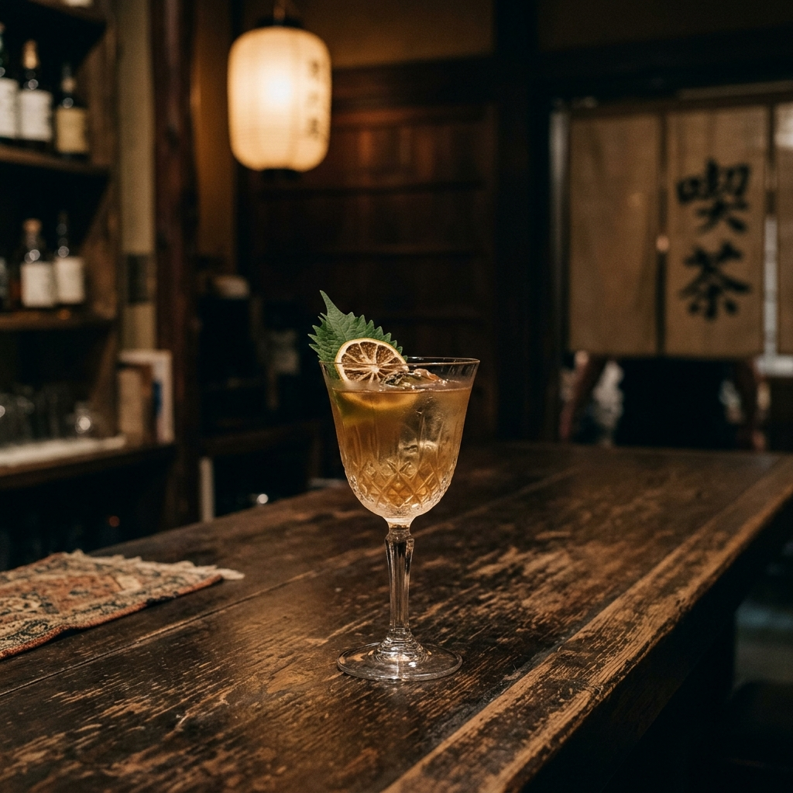
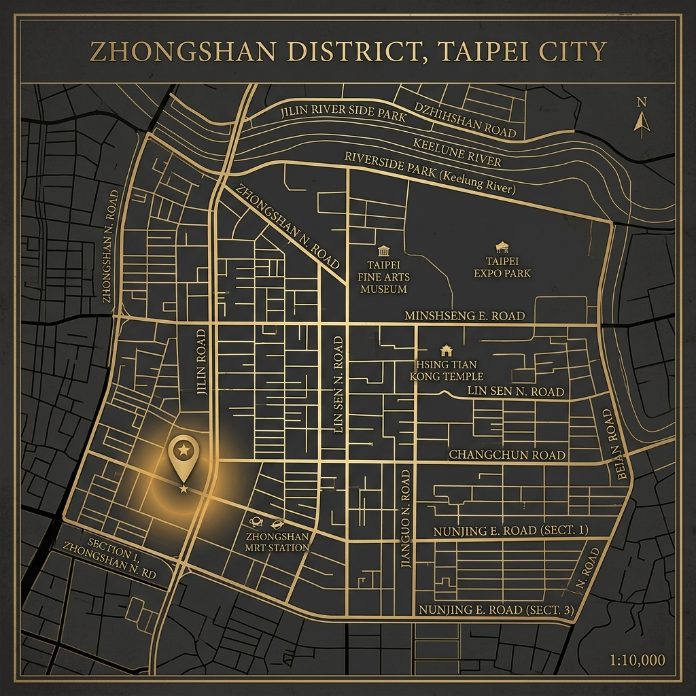

物在：空間的記憶
建築遺產
座落於中山北路一段九十四號，這棟建於1920年代的日式建築，見證了臺北百年的更迭。空間保留了原本的「趣意」，感觸著歲月的溫度，粗糙的木紋，以及那些在時光中沈澱下的痕跡。
我們在這裡實踐 Wabi-sabi（侘寂）的美學：不由示其美，而是尊重事物的原貌與無常。在光影交錯間，無酒精的靈魂得以安置。
「殘缺中的圓滿，是時間留下的最美痕跡。」
品飲記憶
回憶中的酒單：酒精之外的詩意
01. 經典系列
G&T - 琴酒之靈
杜松子、奎寧、森林的氣息。沒有酒精的辛辣，卻有著迴盪的重量。
02. 煙燻系列
煙燻伯爵
煙燻伯爵茶、佛手柑、寂靜的午後。如同老唱片上微苦的灰香。
03. 草本系列
柚子無酉
柚子、青檸、綻放的微光。清甜中帶著一絲不被發現的苦澀。
04. 果香系列
緋紅告別
洛神花、覆盆子、玫瑰水、氣泡。如同夕陽下最後一抹驚豔。
05. 幻夢系列
紫境幻夢
蝶豆花、薰衣草、檸檬、接骨木花。在紫色的迷霧中尋找慰藉。
06. 海洋系列
蔚藍之海
海鹽、藍柑橘風味、氣泡水、迷迭香。海風拂面般的清涼觸感。
07. 暖心系列
初雪告白
椰奶、杏仁、白色可可、蛋白霜。溫潤如雪地中的第一縷陽光。
08. 暗夜系列
永夜之寂
竹炭、濃縮咖啡、黑巧克力、香草。深邃如永恆沉寂的靈魂深處。

地理位置
中山北路一段九十四號
台北市中山區民安里中山北路一段94號
